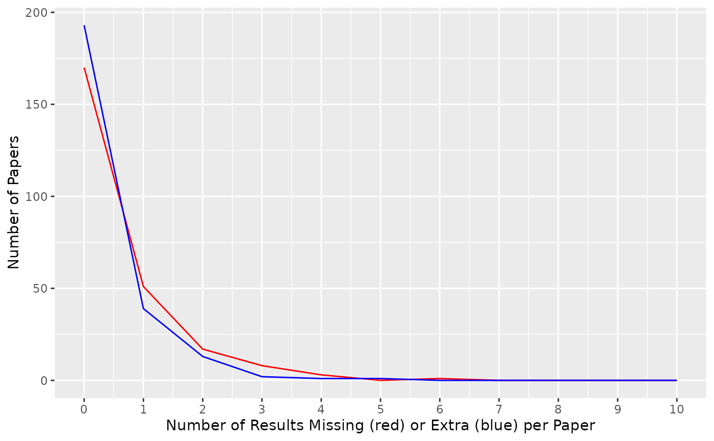

library(papercheck)
library(readr) # reading and writing CSV files
library(dplyr) # for data wrangling
library(tidyr) # for data wrangling
library(ggplot2) # for dataviz
library(tidytext) Initial Text Search
See the batch processing vignette for information on how to load multiple PDFs. Here, we will load 250 open access papers from Psychological Science, which have been previously converted to XML by grobid and read in to papercheck.
papers <- psychsciFixed Terms
Let’s start with a fixed search term: “power analysis”. We’ll keep
track of our iteratively developed search terms by naming the resulting
table text_#.
text_1 <- search_text(papers, pattern = "power analysis")Here we have 104 results. We’ll just show the paper id and text columns of the returned table, but the table also provides the section type, header, and section, paragraph, and sentence numbers (div, p, and s).
We caught a lot of sentences with that term, but are probably missing a few. Let’s try a more general fixed search term: “power”.
text_2 <- search_text(papers, pattern = "power")Here we have 744 results. Inspect them to see if there are any false positives.
Regex
After a quick skim through the 744 results, we can see that words like “powerful” are never reporting a power analysis, so we should try to exclude them.
We can use regex to make our text search a bit more specific. The following pattern requires that power is followed optionally by “ed” and then by a word border (like a space or full stop), so will match “power” and “powered”, but not “powerful”.
# test some examples to check the pattern
pattern <- "power(ed)?\\b"
yes <- c("power",
"power.",
"power analysis",
"powered")
no <- c("powerful",
"powerful analysis")
grepl(pattern, yes)#> [1] TRUE TRUE TRUE TRUE
grepl(pattern, no)#> [1] FALSE FALSE
text_3 <- search_text(papers, pattern)Here we have 651 results. Inspect them for false positives again.
Refining the search
You can repeat this process of skimming the results and refining the search term iteratively until you are happy that you have probably caught all of the relevant text and don’t have too many false positives.
One useful technique is to use dplyr::anti_join() to
check which text was excluded when you make a search term more specific,
to make sure there are no or few false negatives.
Screening
Once you are happy that your search term includes all of the relevant text and not too much irrelevant text, the next step is to save this data frame so you can open it in a spreadsheet application and code each row for ground truth.
readr::write_csv(text_3, "power/power_screening.csv")Be careful opening files in spreadsheet apps like Excel. Sometimes
they will garble special characters like ü or , which will
make the validation process below inaccurate, since the expected values
from your spreadsheet will not exactly match the calculated values from
the modules you’re testing. One way to fix this if it has happened, is
to read the excel file into R and replace the text column
with the text column from the data frame above, and re-save
it as a CSV file.
Validating a Module
Module Creation
To validate a module, you need to write your search term into a
module. See the modules vignette for details.
Creating a module for a text search is very straightforward. Just save
the following text in a file called “power_0.mod”. The
traffic_light entry returns “green” for a paper if any
sentences are found, and “red” if none are found.
{
"title": "Power Analysis",
"description": "List all sentences that contain a power analysis.",
"text": {
"pattern": "power(ed)?\\b"
},
"traffic_light": {
"found": "green",
"not_found": "red"
}
}Now test your module by running it on the papers. The returned table
should be identical to text_3.
mod_test <- module_run(papers, "power/power0.mod")
all.equal(mod_test$table, text_3)#> [1] TRUESet Up Validation Files
Once you have the ground truth coded from your best inclusive search term, you can validate your module and start trying to improve its performance.
First, let’s use the over-inclusive search term. This will, by definition, have no false negatives, but further refining of your module will start to produce both false positives and negatives.
You have to set up two files to match the module output. First, the sample of files to check.
sample <- data.frame(
id = names(papers)
)Second, a table of the expected text matches. You can get this by
filtering your ground truth table to just the rows that are true
positives (hand-coded here as the column
power_computation).
ground_truth <- readxl::read_excel("power/power_screening_coded.xlsx")
ground_truth$text <- text_3$text # fix problem with excel and special chars
expected <- ground_truth |>
filter(power_computation == 1) |>
select(id, text)Add the traffic light to the sample table by determining if there are any matches in the results table.
Validate
v0 <- validate(module = "power/power0.mod",
sample = sample,
expected = expected,
path = "xml")
v0Refine and Iterate
Refine your module to improve it based on your coding of the ground truth. For example, perhaps we decide that almost all instances of real power analyses contain both the strings “power” and “analys”
pattern <- "(analys.*power|power.*analys)"
yes <- c("power analysis",
"power analyses",
"power has an analysis",
"analyse power",
"analysis is powered at")
no <- c("powered",
"power",
"analysis")
grepl(pattern, yes)#> [1] TRUE TRUE TRUE TRUE TRUE
grepl(pattern, no)#> [1] FALSE FALSE FALSEDuplicate the file “power.mod” as “power1.mod” and change the search pattern to this new one and re-run the validation.
v1 <- validate(module = "power/power1.mod",
sample = sample,
expected = expected,
path = "xml")
v1Now we are only matching % of the tables. There are a few ways to investigate this.
Traffic lights can be more complex than “green” and “red”, since they can also return values like “info”, or “na”. But if your values map straightforwardly onto yes and no, you can calculate signal detection measures for your module.
tl_accuracy(v1, yes = "green", no = "red") |> str()#> List of 9
#> $ hits : int 77
#> $ misses : int 41
#> $ false_alarms : int 23
#> $ correct_rejections: int 109
#> $ accuracy : num 0.744
#> $ sensitivity : num 0.653
#> $ specificity : num 0.174
#> $ d_prime : num 1.33
#> $ beta : num 1.44
#> - attr(*, "class")= chr "ppchk_accuracy_measures"You can plot the number of missing and extra results per paper to see if the problem is in false positives and/or false negatives.
ggplot(v1$sample) +
geom_freqpoly(aes(x = misses), color = "red", binwidth = 1) +
geom_freqpoly(aes(x = false_alarms), color = "blue", binwidth = 1) +
scale_x_continuous(breaks = 0:10, limits = c(0, 10)) +
labs(x = "Number of Results Missing (red) or Extra (blue) per Paper",
y = "Number of Papers")
Both seem to be happening here, so let’s look more specifically at false alarms and misses.
Multi-step Text Search
Sometime it makes more sense to filter a set down in steps, such as all sentences that contain the word “power” and then all of those that contain an equal sign and at least one number in the format “.#” or “#%”.
results <- papers |>
search_text("power(ed)?\\b") |>
search_text("(\\.[0-9]|[0-9]%)")You can add chained text searches to the JSON module file like this:
{
"title": "Power Analysis",
"description": "List all sentences that contain the string 'power' and a number.",
"text": {
"pattern": "power(ed)?\\b"
},
"text": {
"pattern": "(\\.[0-9]|[0-9]%)"
},
"traffic_light": {
"found": "green",
"not_found": "red"
}
}
v2 <- validate(module = "power/power2.mod",
sample = sample,
expected = expected,
path = "xml")
v2
tl_accuracy(v2) |> str()#> List of 9
#> $ hits : int 113
#> $ misses : int 5
#> $ false_alarms : int 11
#> $ correct_rejections: int 121
#> $ accuracy : num 0.936
#> $ sensitivity : num 0.958
#> $ specificity : num 0.0833
#> $ d_prime : num 3.11
#> $ beta : num 0.589
#> - attr(*, "class")= chr "ppchk_accuracy_measures"Compare modules
data.frame(
module = c(v0$module, v1$module, v2$module),
tables = c(v0$table_matched, v1$table_matched, v2$table_matched),
traffic_lights = c(v0$tl_matched, v1$tl_matched, v2$tl_matched)
)#> module tables traffic_lights
#> 1 power/power0.mod 0.484 0.772
#> 2 power/power1.mod 0.540 0.744
#> 3 power/power2.mod 0.808 0.936